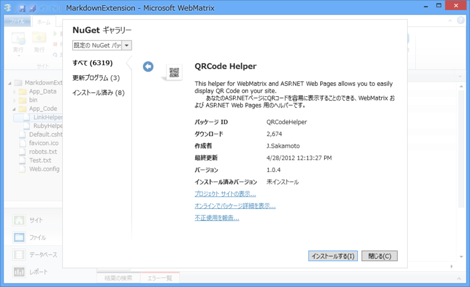

WebMatrix 2: Markdown を汎用的に拡張する仕組みを考えてみる
執筆日時：
Markdown は覚えやすくて書きやすいのだけれど、とても非力に感じる。一応 HTML タグの埋め込みも可能なので、原理的にはなんでも書けるのだけれど、たとえばルビを振りたい場合、
国民の<ruby>税金<rp>(</rp><rt>ぜいきん</rt><rp>)</rp></ruby>を２億円使うなんて
などといちいち書くのは、読みにくいし第一めんどくさい。もっと簡単に、たとえば、
国民の[[ruby|税金|ぜいきん]]を２億円使うなんて
などのような、[[コマンド|引数1|引数2...]] といった記法で書ければどうだろう。なるべく規約ベースとし、Hoge コマンドは Hoge / HogeHelper ヘルパーの GetHtml() メソッドを呼び出すようにする。
# App_Code/RubyHelper.cshtml@helper GetHtml(string text, string ruby){ <ruby>@text<rp>(</rp><rt>@ruby</rt><rp>)</rp></ruby> }
これならば、Markdown の拡張だけでなく、普通の cshtml でも利用できてよいと思う。
国民の@RubyHelper.GetHtml("税金", "ぜいきん")を２億円使うなんて
実装
とりあえずこんな感じにしてみた。
@using System.IO @using System.Reflection @using System.Text.RegularExpressions@functions { private string Camelize(string input) { if (input.Length == 0) return input;
var chars = input.ToArray(); chars[0] = char.ToUpper(chars[0]); return string.Join(string.Empty, chars); } }
@{ // テストテキストをロード var text = File.ReadAllText(Server.MapPath("~/Test.txt"));
// HtmlHelper の子孫を列挙して型名-型ディクショナリを作成 var type_table = AppDomain.CurrentDomain .GetAssemblies() .SelectMany(_ => _.GetTypes()) .Where(_ => _.IsSubclassOf(typeof(HelperPage))) .ToDictionary(_ => _.ToString(), _ => _);
// [[…]] 構文を置換 var regex = new Regex(@"[[(?<params>[^[]\r\n]*)]]"); text = regex.Replace(text, (MatchEvaluator)((match) => { // [[…]]構文の書式 // - [[コマンド|引数1|引数2|…]] // - [[引数1|引数2|引数3…]] : Link コマンドと解釈（規定） var p = match.Groups["params"].Value.Split('|');
// コマンド名は Hoge, HogeHelper … を許容 var helper_table = new string[] { string.Format("ASP.{0}", Camelize(p[0])), string.Format("ASP.{0}Helper", Camelize(p[0])), };
Type helper = null; MethodInfo method = null; string[] args = null;
// 型名-型ディクショナリから、メソッド // (Type: p[0]).GetHtml(p[1], p[2]…) // をもつ HtmlHelper を探す var result = helper_table.FirstOrDefault(name => { if (type_table.TryGetValue(name, out helper)) { args = p.Skip(1).ToArray(); method = helper.GetMethod( "GetHtml", args.Select(_ => _.GetType()).ToArray() ); } return method != null; });
// 見つからなかった場合は、既定の型・メソッドを利用する if (string.IsNullOrEmpty(result)) { helper = typeof(LinkHelper); args = p; method = helper.GetMethod( "GetHtml", args.Select(_ => _.GetType()).ToArray() ); }
// メソッドを実行 return (method.Invoke(helper, args) as HelperResult) .ToHtmlString().ToString().Trim(); } ));
var m = new MarkdownSharp.Markdown(); text = m.Transform(text); }
<!DOCTYPE html>
<html lang="ja"> <head> <meta http-equiv="Content-Type" content="text/html; charset=utf-8"/> <meta charset="utf-8" /> <title>マイ サイトのタイトル</title> <link href="~/favicon.ico" rel="shortcut icon" type="image/x-icon" /> </head> <body> @Html.Raw(text) </body> </html>
当初、型名->型 を解決するには Type.GetType() でいけると思っていたのだけど、引数として渡す型名にはアセンブリ名やバージョンを含めた完全修飾名が必要みたい。つまり
var _type = Type.GetType("ASP.RubyHelper");ではだめで、
var _type = Type.GetType("ASP.RubyHelper, ***, Version=1.0.0.0, Culture=neutral, PublicKeyToken=****");みたいな感じじゃないとダメらしい。ASP.NET の仕組みはイマイチわかっていないのだけれど、裏でコードをコンパイルして、それを実行してるのだと思う。そのアセンブリ名なんて、実行時にはわかんないよね？
しょうがないので、今回は AppDomain にある HelperPage 派生クラス（ヘルパー）を列挙してディクショナリを用意し、型名->型 を解決する方法をとった。ヘルパーに限定したのは、全部突っ込もうとするとキーとなる型名の衝突があって、ToDictionary() が失敗するから。
コマンドを規約通りに検索してみつからない場合は、LinkHelper というリンク生成のためのヘルパーを既定のヘルパーとして呼んでいる。内容はごく簡単なもの。
@helper GetHtml(string url) { <a href="@url">@url</a> } @helper GetHtml(string url, string title) { <a href="@url" title="@title">@title</a> }
ちなみに、Camelize() は簡易実装なのでみないふりしてほしい（寄り道: string クラスの拡張 - だるろぐ）。あと、エラーチェックがぬるい。たとえば、引数の数をわざと多くするとエラーになる。
実験
とりあえず手元ではだいたい動いたので、試しに NuGet から適当なヘルパーを取得して、それを Markdown から呼び出せるかやってみた。

QRCode ヘルパーは、その名もズバリ、QRCode が生成できるヘルパー。このヘルパーは
@QRCode.Render("http://daruyanagi.net/")という感じで呼び出すので、残念ながらそのままでは使えない。App_Code/QRCodeHelper.cshtml という補助ヘルパーを別途用意した（NuGet で取得したコードにはあまり手を入れたくないので）。
@helper GetHtml(string data){
<img src="@Href("~/QRCodeImage.cshtml", new{data, scale = 3})" alt="@data" />
}あとは、[[QRCode|http://daruyanagi.net/]]という記法を Markdown に埋め込むと……

こんな感じになる。GetHtml() メソッドをもつヘルパーだったら、無加工でそのまま利用できる！